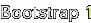
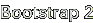

When the Dreamcast boots a GD-ROM or CD-ROM, it reads two things from the
disc before the control is passed to the program. First a bootstrap is
loaded from the reserved boot area (sector 0-15) of the last data track.
This strap is called the "IP.BIN", although it of course does not have a
file name on the disc. Among other things, the IP.BIN names a file in the
ISO filesystem of the disc that contains the actual program to run and load.
This file will here be called the "1ST_READ.BIN", although any name is
possible as long as it is correctly specified in the IP.BIN. When the
1ST_READ.BIN has been loaded, control is passed to the IP.BIN, which will
in turn pass it to the 1ST_READ.BIN. The following sections will explain
the structure of these files, and how you can create your own.
When the Dreamcast boots a GD-ROM or CD-ROM, it reads two things from the
disc before the control is passed to the program. First a bootstrap is
loaded from the reserved boot area (sector 0-15) of the last data track.
This strap is called the "IP.BIN", although it of course does not have a
file name on the disc. Among other things, the IP.BIN names a file in the
ISO filesystem of the disc that contains the actual program to run and load.
This file will here be called the "1ST_READ.BIN", although any name is
possible as long as it is correctly specified in the IP.BIN. When the
1ST_READ.BIN has been loaded, control is passed to the IP.BIN, which will
in turn pass it to the 1ST_READ.BIN. The following sections will explain
the structure of these files, and how you can create your own.
The IP.BIN is loaded by the ROM to address 8C008000. It consists of several parts, as this table shows:
|
This part is identical in content to the IP0000.BIN. It is not necessary to compute a correct checksum for the Device Information field, just writing 0000 works OK.
I don't know what this is used for. Just filling this region with zeroes works OK, and this is what the IP creator does as well.
This is the entry point which the ROM calls after both IP.BIN and 1ST_READ.bin have been loaded. The code here displays the SEGA logo and message "PRODUCED BY OR UNDER LICENSE FROM SEGA ENTERPRISES, LTD." for about 6 seconds and then transfers control to Bootstrap 1. Note that the code in this area can not be modified. The ROM checks every byte of it against a copy in the ROM, and will not boot the disk if there is a difference.
This area contain 8 slots which can either contain the name of a regional area or spaces. For a disk to be bootable in a certain region, the slot for that region must contain the appropriate area name. It is therefore not enough just to set the area symbol characters in the Meta information area. However, if all region names are present here, as they are in the IP.BIN:s created by IP creator, any set of regions can be selected by placing the appropriate letters in the Area Symbols field of the Meta information area.
Each of the Area protection slots is prefixed by a branch instruction jumping past it, as the CPU control actually flows through here on its way to Bootstrap 1. The individual slots are these:
|

This code is run once the licence screen code completes. Contrary to the license screen code, this code can be modified. The default implementation sets up a few hardware registers and then transfers control to Bootstrap 2.

This code is run once Bootstrap 1 completes. Like Bootstrap 1, it can be modified. The default implementation sets up the CPU stack, the VBR, disables the cache, and transfers control to the 1ST_READ.BIN.The 1ST_READ.BIN (or whatever you call it in the Boot filename field of the Meta information area) is loaded to address 8C010000, i.e. right after the IP.BIN. The boostrap will branch directly to this address, so it should be a raw binary file without any headers. (If you have an ELF with a VMA of 0x8c010000, you can convert it with objcopy -O binary for example.)
An interresting feature of the bootloader is that for normal CD:s (not GD:s) this file is not loaded continously into memory, but instead scatter-loaded in a pseudo-random manner. In order for your program to be loaded properly, the binary thus first has to be "scrambled". The Software section contains a tool to perform this task as well. Here is a complete example on how a scrambled 1ST_READ.BIN could be generated from a C source file, using cross-compiling GCC and binutils:
sh-elf-gcc -ml -Wl,-Ttext,0x8c010000 -nostartfiles -nostdlib -e _start prog.c -o prog.elf -lgcc sh-elf-objcopy -O binary prog.elf prog.bin scramble prog.bin 1ST_READ.BIN(This example assumes that prog.c begins with a function start that will be called first.)
Last modified: Thu Nov 16 02:48:47 MET 2000